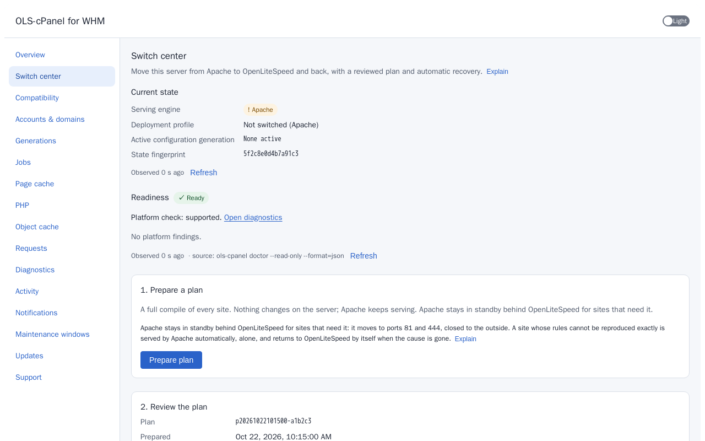

Install
One command, run as root. The installer checks everything before it changes anything, prepares the server while Apache keeps serving, and asks for your approval before the switch.
Before you start
- AlmaLinux 9 (x86_64) with a licensed, working cPanel & WHM, and root access.
- Console access to the server that does not depend on SSH or the web server.
- A current backup kept somewhere else. The installer backs up the cPanel and Apache configuration it changes, but that is not a backup of your sites, mail or databases.
- The tools of a standard cPanel server:
curl,gpg,sha256sum,mktemp,dnf. - A maintenance window for the final switch. Until then your sites keep running on Apache.
The one command
This is the command from the release notes of release 0.2.11. It downloads the installer of exactly this release into a private temporary directory, stops if it does not match the published SHA-256 digest, runs it, and removes the directory. Nothing downloaded is piped into a shell.
d=$(mktemp -d) && curl --proto '=https' --tlsv1.2 -fsSL -o "$d/install.sh" "https://github.com/2tdv/OLS-cPanel-WHM/releases/download/0.2.11/install.sh" && echo "2b483993890bbf98045ab869e453bdf7e7d39fa13ab5fbbe37d57501125eef3c $d/install.sh" | sha256sum -c - && sh "$d/install.sh"; rm -rf "$d"Installer SHA-256: 2b483993890bbf98045ab869e453bdf7e7d39fa13ab5fbbe37d57501125eef3c
Use the command from the release notes. For a newer release, take the command from that release's notes on the releases page, and compare the digest with the one shown there.
From a non-root account with sudo, replace sh "$d/install.sh" with sudo sh "$d/install.sh". To prepare only and switch later, add --prepare-only to the installer call.
Stricter: check the installer's signature first
This variant fetches the project's release key from keyserver.ubuntu.com by its fingerprint and verifies the installer's signature before running it, so it does not depend on the digest shown on the release page.
d=$(mktemp -d) && mkdir -m 700 "$d/g" && export GNUPGHOME="$d/g" && curl --proto '=https' --tlsv1.2 -fsSL -o "$d/install.sh" "https://github.com/2tdv/OLS-cPanel-WHM/releases/download/0.2.11/install.sh" && curl --proto '=https' --tlsv1.2 -fsSL -o "$d/install.sh.asc" "https://github.com/2tdv/OLS-cPanel-WHM/releases/download/0.2.11/install.sh.asc" && gpg --keyserver hkps://keyserver.ubuntu.com --recv-keys 118DFA42F66A585D176C0B5148E26833CB82EAD1 && gpg --verify "$d/install.sh.asc" "$d/install.sh" && sh "$d/install.sh"; unset GNUPGHOME; rm -rf "$d"Release signing key fingerprint: 118DFA42F66A585D176C0B5148E26833CB82EAD1. Its public key is also in the repository as build/release/ols-cpanel-release-key.asc.
What the installer prints
The output above is an example: the numbers, plan id and some lines (shown as "...") differ on a real server, and the cutover lists more steps.
What happens, stage by stage
Stages 1 to 3 change nothing on the server.
- Checks. Root access, operating system, version and architecture, cPanel and its PHP runtime, and the required tools. An unsupported system is refused.
- Download. The signed release manifest, its signature and the packages are downloaded over HTTPS into a private temporary directory readable only by root.
- Verification. The manifest signature is checked against the release key built into the installer, using a separate temporary keyring. Every package must match its digest from the manifest. If anything does not match, the installer stops and the server is unchanged.
- Package installation. The release key is imported into the rpm database and the verified packages are installed with
dnf. The packages only place files; nothing is started yet. Running the same command again is safe. - Preparation. A read-only report of the server, a backup of the cPanel and Apache configuration the product will touch, the first OpenLiteSpeed configuration generated from cPanel's data and validated, and the WHM and cPanel plugins. OpenLiteSpeed does not take over any public port yet, and Apache keeps serving your sites.
- Cutover. Only in an interactive terminal without
--prepare-only. The installer shows the plan: which sites move to OpenLiteSpeed, which stay on Apache behind it, which services are affected and how to recover.
The approval: type yes
Nothing is switched until you approve the plan. The installer asks in bold yellow and waits. Type yes and press Enter to approve; anything else cancels and changes nothing. After approval OpenLiteSpeed takes over ports 80 and 443 and every site is checked. If a check fails, the server returns to Apache automatically.
If the installer is not attached to a terminal, or you used --prepare-only, it stops after the preparation and prints the command to run when you are ready.
Switching later, from WHM
You do not have to switch during the install. Open WHM → Plugins → OLS-cPanel → Switch center to review the plan and switch when it suits you, or schedule it in a maintenance window.


Cancelling
- During stages 1 to 3: press Ctrl+C. Nothing was changed.
- During stage 4:
dnfcompletes or rolls back its own transaction. Run the same command again to finish. - After stage 5: Apache is still serving. Leave the preparation in place, or remove it (see Going back).
- At the approval: decline. Apache keeps serving and nothing is switched.
Exit status
| Code | Meaning |
|---|---|
| 0 | Finished (prepared, or cut over after your approval) |
| 64 | Unknown option |
| 65 | Verification failed (signature, release, platform or package digest); nothing was changed |
| 69 | Unsupported system, or an installer that was not prepared for a release |
| 70 | A download, package installation, preparation or cutover step failed |
| 77 | Not run as root |
A verification failure is never a reason to bypass the checks. Report it, and do not install packages from that location.